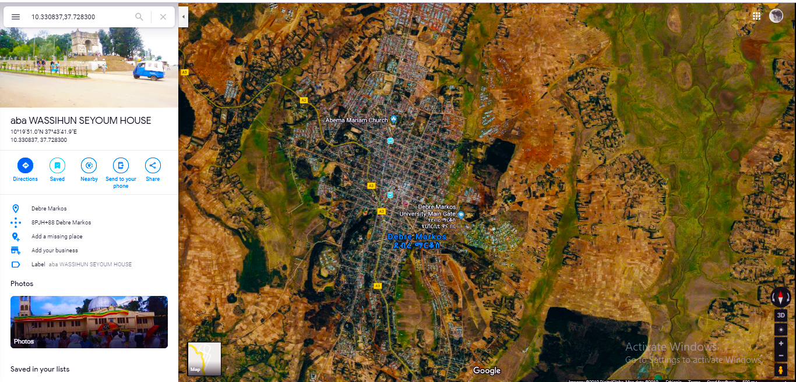

My name is henok webegzier.
i was born in amhara regional state
,in gojjam ,debremarkos. I study from lower
grade up to 12th there. i have got 4.0 grade
in grade 10 examnation. also i have got 450 in
grade 12 examnation .starting from loewr grade
i was good at:- Mathmatics and Ict ,with that habit
i was an intension of be software developer now i am
computer science and engineering student in adama
science and technology university [astu] .